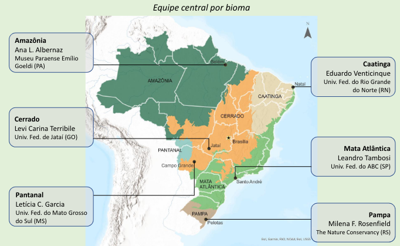

1 Introdução
O projeto Mapeamento de áreas resilientes a mudanças climáticas nos biomas brasileiros é coordenado por The Nature Conservancy Brasil e a primeira oficina com especialistas de cada bioma será realizada virtualmente nos dias 13 e 15 de junho de 2023.
O projeto procura mapear sítios resilientes a mudanças climáticas e áreas importantes para manutenção ou restabelecimento da conectividade entre eles, identificando locais que seriam mais adequados a persistir e se adaptar às futuras mudanças no clima. O produto principal do projeto é um mapa de áreas resilientes a mudanças climáticas para o Brasil.
1.1 Membros da equipe
1.1.1 Equipe TNC Brasil
- Milena Rosenfield (coordenação)
- Mário Barroso
- José Fronza
- Clícia Barata
- Edenise Garcia
1.1.2 Equipe central por bioma
- Amazônia: Ana Albernaz, Luciano Querido (Museu Paraense Emílio Goeldi)
- Caatinga: Eduardo Venticinque, Marina Antongiovanni (Universidade Federal do Rio Grande do Norte)
- Cerrado: Levi Carina Terribile, Lucas Jardim (Universidade Federal do Jataí)
- Mata Atlântica: Leandro Tambosi, Andrea Sánchez-Tapia (Universidade Federal do ABC)
- Pampa: Milena Rosenfield, Mário Barroso, José Fronza (The Nature Conservancy Brasil)
- Pantanal: Letícia Couto Garcia, Alisson Ribeiro (Universidade Federal do Mato Grosso do Sul)
1.1.3 Especialistas convidados
| Bioma | Pesquisador(a) | Instituição | Cidade |
|---|---|---|---|
| Amazônia | Ane A. C. Alencar | IPAM | Brasília |
| Amazônia | Cintia Cornelius Frische | UFAM | Manaus |
| Amazônia | Fernanda Werneck | INPA | Manaus |
| Amazônia | Flávia Costa | INPA | Manaus |
| Amazônia | Ima Vieira | Museu Goeldi | Belém |
| Amazônia | Liana O. Anderson | CEMADEN | São José dos Campos |
| Amazônia | Marcos Adami | INPE | São José dos Campos |
| Caatinga | Adrian Garda | UFRN | Natal |
| Caatinga | Camile Lugarini | ICMBio | Juazeiro |
| Caatinga | Carlos R. S. D. da Fonseca | UFRN | Natal |
| Caatinga | Cláudia B. Campos | ICMBio | Juazeiro |
| Caatinga | Eugenia Cordero Schmidt | IUCN | João Pessoa |
| Caatinga | Felipe P. L. de Melo | UFPE | Recife |
| Caatinga | Marcelo F. Moro | UFC | Fortaleza |
| Cerrado | Alessandro R. de Morais | IF Rio Verde | Rio Verde |
| Cerrado | Beatriz S. Marimon | UNEMAT | Nova Xavantina |
| Cerrado | Gustavo Vasquez | Embrapa Solos | Rio de Janeiro |
| Cerrado | Karla Maria Silva de Faria | UFG | Goiânia |
| Cerrado | Luisa Carvalheiro | UFG | Goiânia |
| Cerrado | Manuel E. Ferreira | UFG | Goiânia |
| Cerrado | Paulo de Marco | UFG | Goiânia |
| Cerrado | Priscila L. de A. Silva | UFMT | Cuiabá |
| Cerrado | Rafael Loyola | IIS | Rio de Janeiro |
| Cerrado | Vania R. Pivello | USP | São Paulo |
| Mata Atlântica | Andreza Neri | UFV | Viçosa |
| Mata Atlântica | Camila Rezende | FBDS | Rio de Janeiro |
| Mata Atlântica | Danilo Neves | UFMG | Belo Horizonte |
| Mata Atlântica | Gerd Sparovek | ESALQ | Piracicaba |
| Mata Atlântica | Kátia M. de B. Ferraz | USP | São Paulo |
| Mata Atlântica | Maíra Benchimol | UESC | Ilhéus |
| Mata Atlântica | Márcia Marques | UFPR | Curitiba |
| Mata Atlântica | Mariana M. Vale | UFRJ | Rio de Janeiro |
| Mata Atlântica | Ricardo Dobrovolski | UFBA | Salvador |
| Mata Atlântica | Rita Portela | UFRJ | Rio de Janeiro |
| Pampa | Alexandre J. D. Krob | Inst. Curicaca | Porto Alegre |
| Pampa | Eduardo Vélez Martin | UFRGS | Porto Alegre |
| Pampa | Fernando Becker | UFRGS | Porto Alegre |
| Pampa | Gerhard E. Overbeck | UFRGS | Porto Alegre |
| Pampa | Heinrich Hasenack | UFRGS | Porto Alegre |
| Pampa | Márcio Borges Martins | UFRGS | Porto Alegre |
| Pampa | Sandra C. Müller | UFRGS | Porto Alegre |
| Pantanal | Angélica Guerra | IHP | Corumbá |
| Pantanal | Antônio C. Paranhos Filho | UFMS | Campo Grande |
| Pantanal | Camila Leonardo Mioto | UFR | Rondonópolis |
| Pantanal | Cátia N. da Cunha | UFMT | Cuiabá |
| Pantanal | Fabio de O. Roque | UFMS | Campo Grande |
| Pantanal | Geraldo A. Damasceno Júnior | UFMS | Campo Grande |
| Pantanal | Mario Luis Assine | Unesp | Rio Claro |
| Pantanal | Renata Libonati | UFRJ | Rio de Janeiro |
| Pantanal | Thadeu Sobral de Souza | UFMT | Cuiabá |